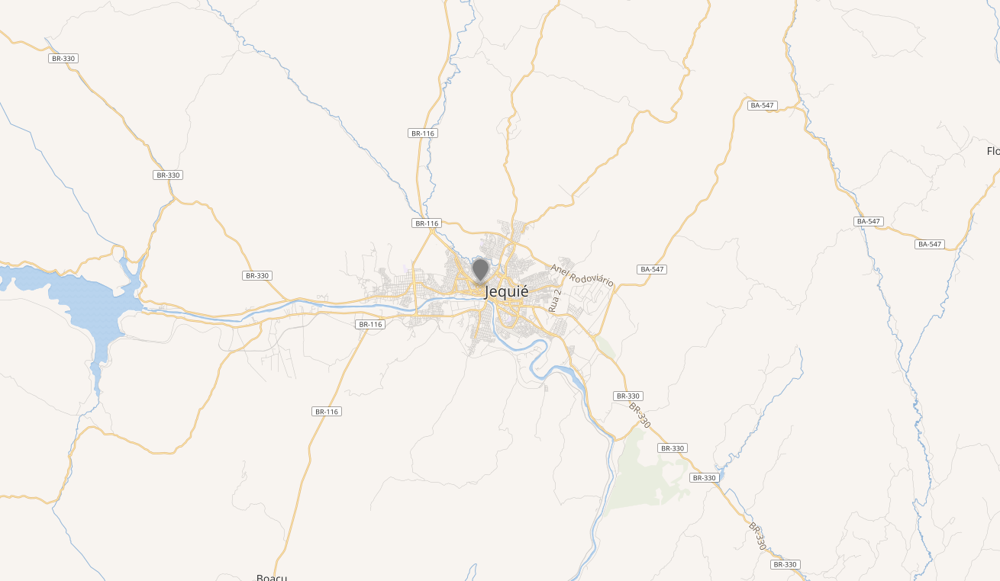

Bem vindo(a) ao site da cidade de Jequié, aqui você poderá encontrar diversas informações sobre a cidade, como sua história, pontos de referência, onde está situada, Instituições de Ensino, e muito mais!

Jequié fica localizada no Sudoeste da Bahia, na zona Limítrofe entre a Caatinga e a Zona da Mata.
As príncipais vias de acesso à cidade são as Rodovias Federais BR-116 e BR-330 e as Rodovias Estaduais BA-547, BA-891, BA-130 e BA-558
ou pelo Aeroporto Vicente Grilo que possui uma pista de 1.2 Km
412 2025 -- Benjamin Constant, João Pedro Bispo, Daniel Lima, Kiara Ferreira, Priscila Santos e Samira Batista